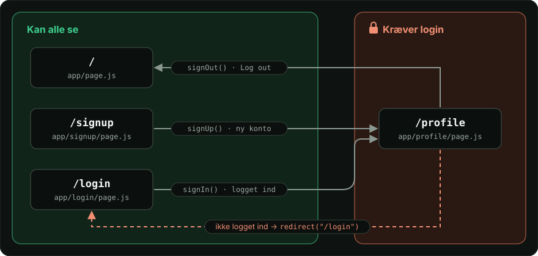
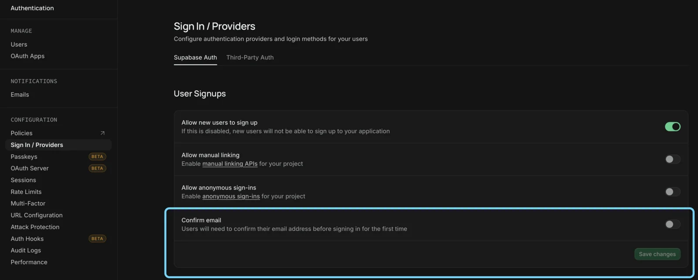
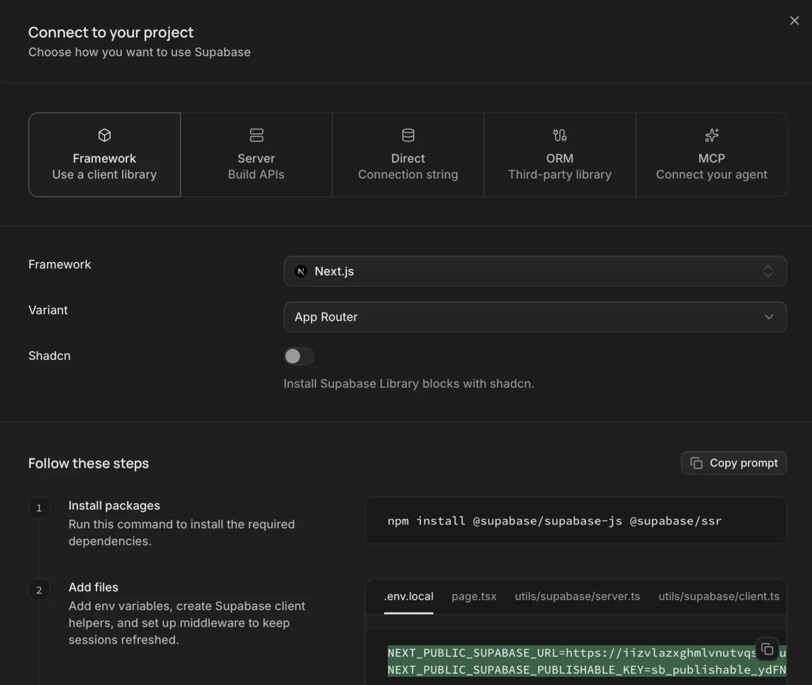
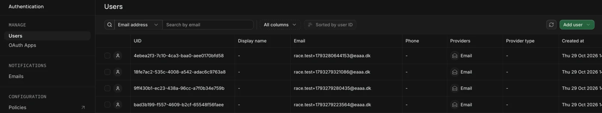
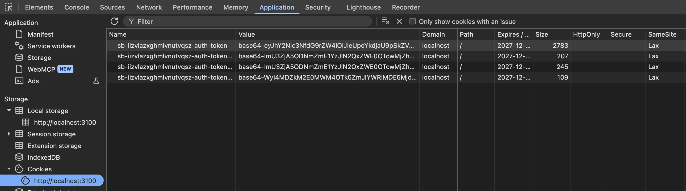
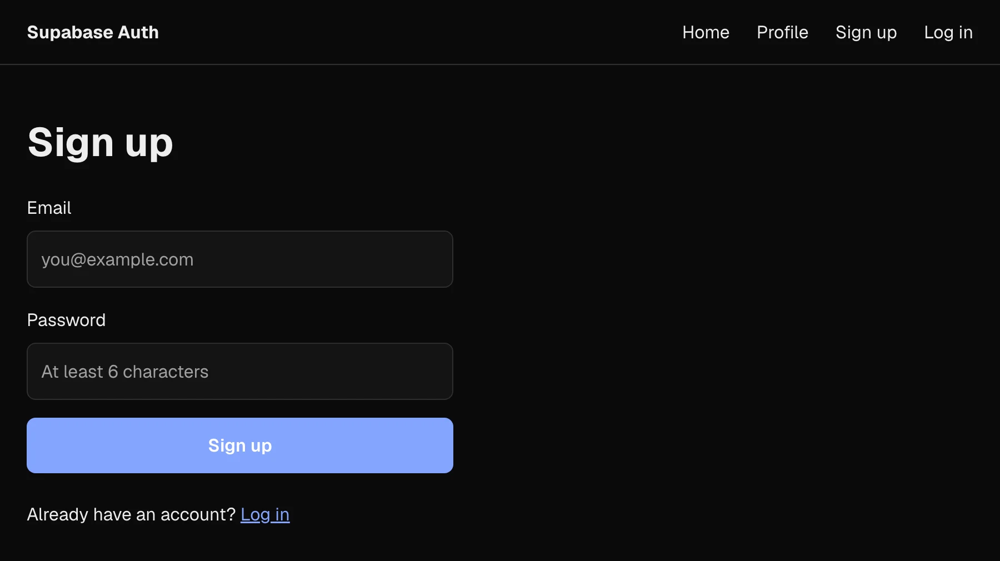
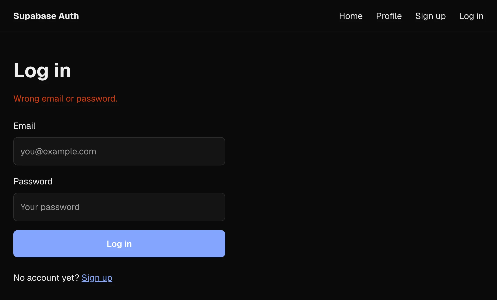
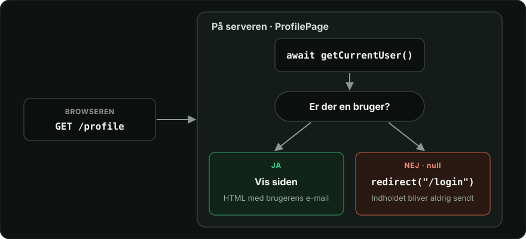
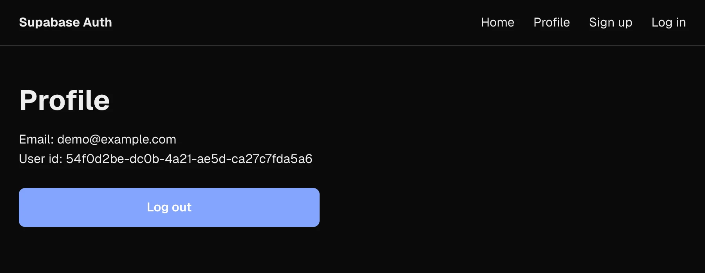

✓ Det er dig — du får et nøglekort 🪪
Supabase Auth i Next.js · sign up, log ind og beskyttede sider
RACE
sb-…-auth-token
/profile
Velkommen!
👤Startanonym læser
proxy.js
redirect · siden, ikke data
🪪Målbruger med en profil
Teori i seks korte kapitler Opgaver du bygger undervejs

To spørgsmål, der lyder ens, men løses forskellige steder.
dig@eaaa.dk
Password••••••••
Log in✓ Det er dig — du får et nøglekort 🪪
SidenLogget udLogget ind 🪪
/✓✓
/login✓✓
/profile✗ → /login✓
Andres data 10. november✗✗
Nøglekortet forbinder de to: Login giver dig det. Hver side læser det og afgør, om du må komme ind.
— så I ikke selv skal gemme adgangskoder.
Brugeren vælger selv en adgangskode. Supabase gemmer den krypteret — aldrig i klartekst.
Ingen adgangskode. Brugeren får et link eller en kode på e-mail.
Log ind med Google, GitHub, Apple og andre konti, brugeren allerede har.
Alle brugere står under Authentication → Users — i tabellen auth.users.
Efter login får brugeren et nøglekort, der bliver fornyet automatisk.
Row Level Security kan spørge: Hvem er brugeren? Så kan I beskytte data pr. bruger.
Et SDK er et library med færdige funktioner. I kalder en funktion — SDK'et sender requesten til Supabase og gemmer sessionen i cookies for jer.
createClient()Laver en Supabase-klient, der kan læse cookiesStartprojektet
supabase.auth.signUp()Opretter en bruger og logger den indOpgave 2
supabase.auth.signInWithPassword()Tjekker e-mail og adgangskodeOpgave 3
supabase.auth.getClaims()Hvem er logget ind? Tjekker, at sessionen er ægteOpgave 4
supabase.auth.signOut()Logger ud og sletter sessionenOpgave 4
Use this template → Create a new repository. Klon det, og kør npm install.
Slå Confirm email fra under Authentication → Sign In / Providers, og gem.
.env.localKopiér .env.example til .env.local med URL og key fra Connect. Kør npm run dev.
Repetér routes, layout.js og @/. Find så lib/supabase/server.js og proxy.js — dem ændrer du ikke.
Paused? Klik på Resume project. URL and Key are required? Tjek .env.local, og genstart npm run dev.
Resultat: Appen kører, og dit repository ligger på GitHub. /signup giver Page not found — den laver du nu.


.env.local · kun de to linjer
HTTP har ingen hukommelse — hver request er en fremmed.
BrowserServer
1 · e-mail og adgangskode
2 · ✓ Velkommen
3 · Vis min profil
4 · ✗ Hvem er du?
BrowserServer
1 · e-mail og adgangskode
2 · ✓ Velkommen — her er dit nøglekort 🪪
3 · Vis min profil 🪪
4 · ✓ Her er din profil
HTTP glemmer dig mellem hver request. Spørgsmålet er nu: Hvor i browseren skal nøglekortet ligge, så det kommer med?
localStorageJavaScript i browserenTil den bliver slettetNej
sessionStorageJavaScript i browseren · kun i fanenTil fanen lukkesNej
I jeres React Router-app fra Product optimization lå sessionen i localStorage.
Det virkede, fordi al koden kører i browseren. I Next.js skal serveren også kunne se den.
Request →GET /profile🍪 sb-…-auth-token
← ResponseHTML med din profil
page.jsTjek →getClaims()
← SvarDet er dig@eaaa.dk
Derfor cookies: Det er det eneste af de tre steder, serveren kan se.
@supabase/ssr sørger for, at sessionen havner dér.

Application → Cookies i Chrome · Storage i Safari og Firefox. Cookien med
-auth-token er sessionen.
≈ 1 time og så udløber det
Det token, der beviser, hvem du er. Det sendes med og tjekkes, hver gang du beder om noget beskyttet.
{ "sub": "7f3c…", "email": "dig@eaaa.dk" }
Lang levetid men kan kun forny
Det token, der henter et nyt access token, når det gamle er udløbet. Så slipper du for at logge ind igen.
— derfor kan siden se, hvem du er, og formularen kan logge dig ind.
async og læse
cookies, før HTML'en sendes.
"use server""use server", som en formular kalder, når den sendes. Den kører på
serveren og kan sætte cookies.
Når siden hentes →GET /profile
← ResponseHTML med din profil
ProfilePage() bygger HTML'en
Når formularen sendes →POSTe-mail og adgangskode
← Responsecookie + redirect()
"use server"
signUp(formData) logger dig ind
Server Component er standard — indtil du skriver "use client". En Server
Action markerer du selv med "use server".
app/profile/page.js
import { getCurrentUser } from "@/lib/auth";
export default async function ProfilePage() {
const user = await getCurrentUser();
return <p>Email: {user.email}</p>;
}Intet "use client"Så er den en Server Component. Du skriver ikke noget for det.
async og awaitKomponenten må vente på data, før den returnerer JSX.
getCurrentUser()Læser cookien i requesten. Det kan kun serveren.
returnServeren bygger HTML'en og sender den færdig til browseren.
Hvorfor? Siden ved, hvem du er, før den bliver sendt. Ingen useState, ingen
useEffect og ingen loading.
app/signup/page.js · over komponenten
async function signUp(formData) {
"use server";
const email = formData.get("email");
const password = formData.get("password");
const supabase = await createClient();
await supabase.auth.signUp({ email, password });
redirect("/");
}
<form action={signUp}>…</form>"use server"Gør funktionen til en Server Action. Den kører på serveren — aldrig i browseren.
action={signUp}Formularen sendes som en POST, og Next.js kører signUp.
formData.get("email")Henter feltet med name="email".
redirect("/")Sender brugeren videre. I opgave 4 til /profile.
Hvorfor? Koden kører på serveren, så den kan logge dig ind og sætte cookien — uden
onSubmit og fetch.
Hvad sker der, fra brugeren klikker på Sign up eller Log in, til profilen viser deres e-mail?
ClientBrowseren
Server · Server ActionNext.js
Server · AuthSupabase
POST formularen · e-mail og adgangskode
signInWithPassword()
tjekker adgangskoden
Set-Cookie: sb-…-auth-token + redirect("/profile")
gemmer cookien
GET /profile · 🍪 cookien kommer med
name bliver til formDataBrowseren · formularenBrugeren skriverServeren · signUp(formData)
<input name="email" />dig@eaaa.dk→formData.get("email")
<input name="password" />••••••••→formData.get("password")
<form action={signUp}>klikker på Sign up→POST · Next.js kører signUp
nameformData. Uden name kommer feltet ikke med til serveren.<label htmlFor> og idhtmlFor peger på feltets id.app/signup/page.js
app/signup/page.js · forkortet
export const metadata = { title: "Sign up" };
async function signUp(formData) {
"use server"; // … Supabase og redirect
}
export default async function SignUpPage({ searchParams }) {
const { error } = await searchParams;
return (
<main>
{error && <p className="form-error">…</p>}
<form action={signUp}>…</form>
</main>
);
}metadataBliver til <title> i fanen.
Server ActionStår over komponenten i samme fil.
searchParamsDet efter ? i URL'en. Et Promise, så await.
Server ComponentSignUpPage viser siden og fejlen ved ?error=true.
lib/supabase/server.js
lib/supabase/server.js · forkortet
export async function createClient() {
const cookieStore = await cookies();
return createServerClient(URL, PUBLISHABLE_KEY, {
cookies: {
getAll: () => cookieStore.getAll(),
setAll(cookiesToSet) {
try {
cookiesToSet.forEach(({ name, value, options }) =>
cookieStore.set(name, value, options));
} catch {
// Server Components can't write cookies
}
}
}
});
}createClient()Laver Supabase-klienten — objektet bag supabase.auth.…, ikke browseren. En ny pr. request, så brugere ikke deler session.
getAll()Læser cookies fra requesten. Sådan ved serveren, hvem der spørger.
setAll()Skriver cookies. Virker i en Server Action — sådan bliver du logget ind. Ikke i en Server Component. Det løser proxy.js.
Og browser-klienten?Den findes også, men i dag taler kun serveren med Supabase.
proxy.js?
page.js kan ikke skrive cookies — det kan proxy.jsRequest →GET /profile🍪 udløbet nøglekort
← Response🍪 nyt nøglekortHTML med din profil
proxy.jsVidere →med det nye nøglekort
← HTMLsiden er bygget
page.jsmiddleware.js.proxy.jsOpret app/signup/page.js med en <h1> og metadata. Mappen er URL'en.
<form className="auth-form"> med en <label> og en name til e-mail og adgangskode. CSS'en findes allerede.
Skriv signUp med "use server" i samme fil, og giv formularen action={signUp}. Find cookien.
Send til /signup?error=true ved fejl, og vis en besked, når searchParams har error.
Ingen -auth-token-cookie? Slå Confirm email fra, og opret brugeren igen. Altid fejl? Log error.message i terminalen.
Resultat: Din bruger står i Supabase, og du har en cookie, der slutter med -auth-token. Indeni ligger dit access token og refresh token.
Kopiér mappen app/signup/ til app/login/.
Titel, overskrift og knap: Log in. Adgangskoden: current-password.
signInOmdøb signUp til signIn, og kald signInWithPassword i stedet.
Log ind med din bruger fra opgave 2. Valgfri: Prøv en forkert adgangskode.
Intet nyt efter login? Det er rigtigt nok — det ser du på profilen i opgave 4.
Resultat: Du kan logge ind med din bruger fra opgave 2.

/signup · formularen med className="auth-form"
/login?error=true · fejlbeskeden · valgfriKun profilen kræver login — resten er offentligt.
if på serveren afgør det
redirect() stopper siden. Koden under den kører kun, når der er en bruger — så
user er aldrig null længere nede.
lib/auth.js
export async function getCurrentUser() {
const supabase = await createClient();
const { data } = await supabase.auth.getClaims();
return data?.claims ?? null;
}app/profile/page.js
export default async function ProfilePage() {
const user = await getCurrentUser();
if (!user) {
redirect("/login");
}
return <p>{user.email}</p>;
}getClaims()email og id'et i sub.getClaims(), når du beskytter noget på serveren. Supabase advarer mod getSession(), som ikke tjekker kortet.Opret lib/auth.js med getCurrentUser().
Opret app/profile/page.js, og vis user.email og user.sub. Åbn den i et privat vindue.
if (!user) → redirect("/login") øverst i komponenten. Test i det private vindue igen.
Tilføj signOut og en Log out-knap på profilen. Send signUp og signIn til /profile.
Fejler profilen i det private vindue? user er null — det løser tjekket. Redirect-loop? Tjek aldrig på /login.
Resultat: /profile viser din e-mail, når du er logget ind, og sender dig til /login, når du ikke er.

Åbn /profile i et privat vindue. Så lander du på /login — tjekket
virker.
Brugeren ser den ikke — men kan stadig skrive URL'en.
Ikke beskyttelsegetCurrentUser() og redirect. Siden sendes kun til brugere, der er logget ind.
Kilden selv afgør, hvem der må læse og ændre — Row Level Security i Supabase.
Beskytter data
Prøv selv: Log ud, og åbn /wp-json/wp/v2/posts på din WordPress. Indholdet er
stadig offentligt. I har låst siden — ikke data.
npm run build
Route (app)
┌ ○ /
├ ○ /_not-found
├ ƒ /login
├ ƒ /profile
└ ƒ /signup
○ (Static) prerendered as static content
ƒ (Dynamic) server-rendered on demand○ StaticBygges én gang og er den samme for alle — som forsiden.
ƒ DynamicBygges ved hver request, fordi svaret afhænger af, hvem der spørger.
Hvad gør en side dynamic?Den læser noget fra requesten: cookies som på /profile eller searchParams som på /login.
Headeren i layoutet?Læser den cookien, bliver alle sider ƒ. Derfor <Suspense> i WordPress-appen.
/membersEndnu en beskyttet route med det samme tjek. Tilføj den i headeren.
Logget ind? Send fra /login og /signup til /profile med if (user).
Flyt signOut til lib/actions.js. AuthStatus viser e-mail og Log out i headeren.
Byg login ind i din WordPress-app, og lås detaljesiderne for posts.
async Client Component? Fjern "use client" fra AuthStatus. Build fejler i WordPress-appen? Pak <AuthStatus /> ind i <Suspense>.
Resultat: Din ekstraopgave virker logget ind, logget ud og i et privat vindue.